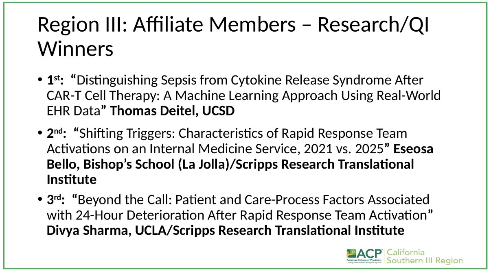
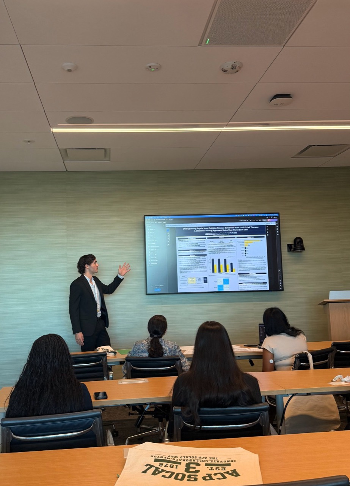
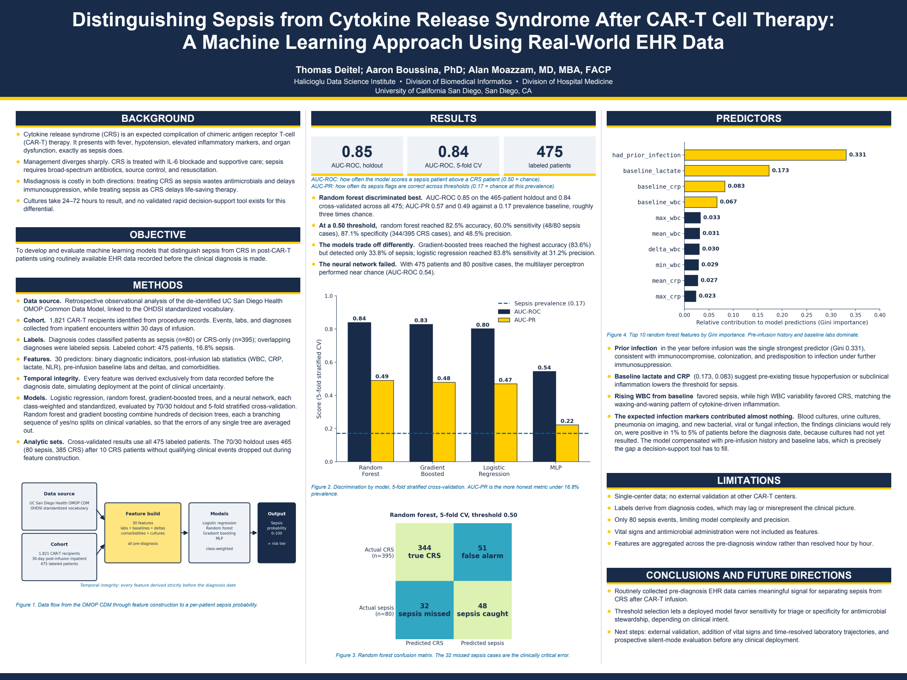

Thomas Deitel · Project portfolio
Distinguishing Sepsis from CRS After CAR-T Therapy
1st Place — ACP California Southern Region III · Affiliate Members · Research/QI · 2026
I developed a machine learning pipeline at UC San Diego's Boussina Lab to distinguish sepsis from cytokine release syndrome (CRS) after CAR-T cell therapy using real-world electronic health records. I presented this research to the American College of Physicians (ACP) at Sharp Medical Center for Innovation and Education.
Authors: Thomas Deitel; Aaron Boussina, PhD; Alan Moazzam, MD, MBA, FACP.
University of California San Diego · Halicioglu Data Science Institute · Biomedical Informatics · Hospital Medicine
First-place research recognition
My project won 1st place in the Affiliate Members — Research/QI competition at ACP California Southern Region III. The announcement identifies Thomas Deitel, UCSD, for “Distinguishing Sepsis from Cytokine Release Syndrome After CAR-T Cell Therapy: A Machine Learning Approach Using Real-World EHR Data.”


Code and data availability
The project repository, source code, and patient-level data are not publicly available due to UC Health data-sharing restrictions. This portfolio shares public presentation materials, event photos, award recognition, and aggregate research results only.
The research question
Sepsis and CRS can look similar after CAR-T therapy. This retrospective study asks whether information recorded before diagnosis can help rank patients by sepsis risk while clinicians face uncertainty.
My work
As AI Research Modeling Head, I built BigQuery SQL and Python workflows for OMOP cohort selection, clinical feature engineering, and model training. The study compares logistic regression, random forest, gradient-boosted trees, and a multilayer perceptron.
The source cohort contains 1,821 CAR-T recipients. Diagnosis-code labels identify 475 patients: 80 with sepsis and 395 with CRS only. Thirty predictors combine clinical indicators, laboratory summaries, baseline values and changes, and comorbidities. Features use records dated before diagnosis to limit temporal leakage.
Results reported in the ACP materials
- Random forest holdout ROC AUC
- 0.85
- 5-fold cross-validation ROC AUC
- 0.84
- Cross-validation PR AUC
- 0.49
- Sepsis prevalence
- 16.8%
Cross-validation uses all 475 labeled patients. The 70/30 holdout analysis uses a 465-patient analytic set after 10 CRS patients without qualifying clinical events were excluded; 0.85 is the test-split ROC AUC, not an evaluation on all 465 patients.
At a 0.50 threshold, cross-validated random forest predictions identified 48 of 80 sepsis cases (60.0% sensitivity), with 87.1% specificity and 48.5% precision. Prior infection, baseline lactate, and baseline CRP were the strongest reported predictors.
Interpretation and next steps
The results support further investigation of risk ranking, not a validated diagnostic tool. At the tested threshold the model missed 32 of 80 sepsis cases. The study uses single-center data and diagnosis-code labels, with only 80 sepsis events, no external validation, and no vital-sign or antimicrobial-administration features.
Next steps include time-resolved laboratory trajectories, additional clinical variables, external validation, and prospective silent-mode evaluation before clinical use.
ACP ePoster
